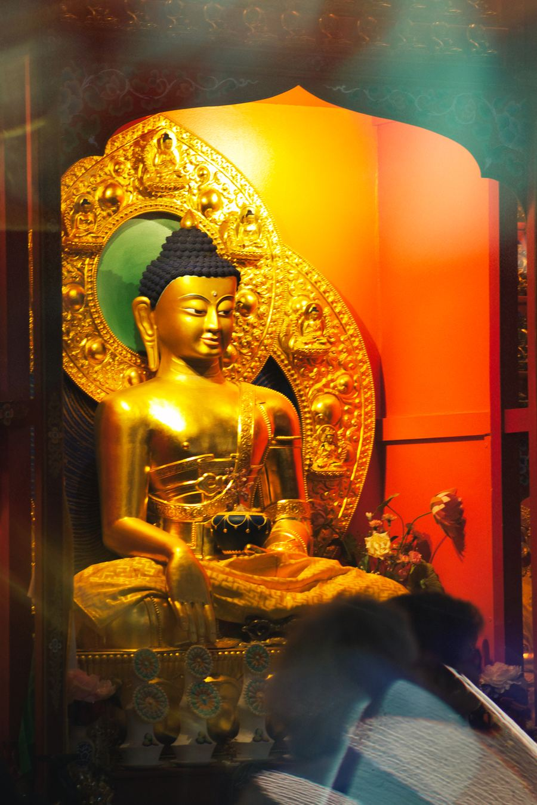
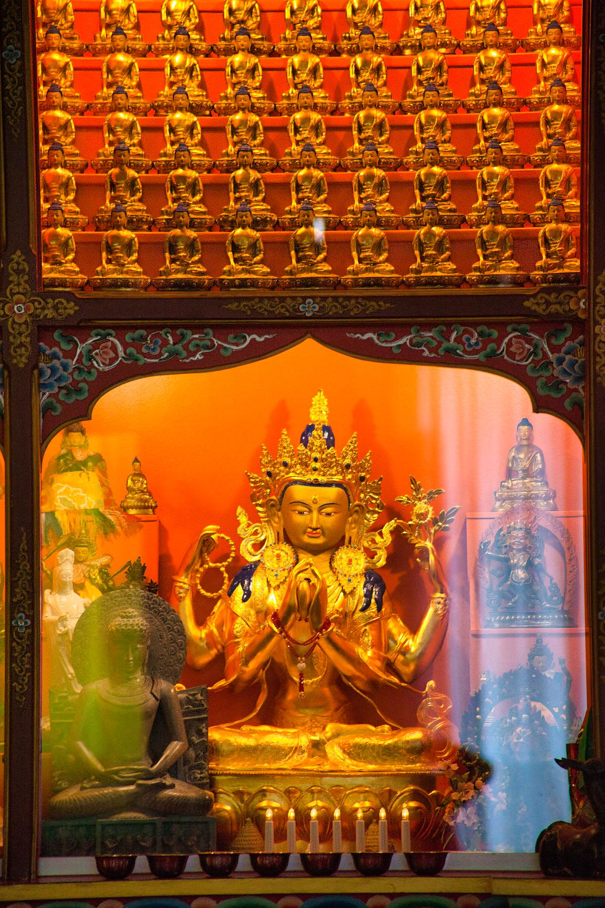

Fondée dans la tradition de la lignée Drukpa du bouddhisme tibétain, notre association organise des sessions de méditation, des pratiques spirituelles et des enseignements pour tous ceux qui souhaitent progresser sur le chemin du Dharma.
Membre de l'UBF et affiliée au centre Drukpa Plouray, siège européen de la lignée, nous accueillons régulièrement des lamas et maîtres spirituels qualifiés.
Nous participons au dialogue interreligieux au Centre Théologique de Meylan-Grenoble.
15Adhérents 2025
4Week-ends annuels
30+Ans de pratique
2Aumôniers
« Contribuer à nourrir les causes d'un bonheur relatif et aussi plus profond et véritable pour toutes celles et tous ceux qui s'y relient. »
— Lopön Thrinlé Tenzin, Président
